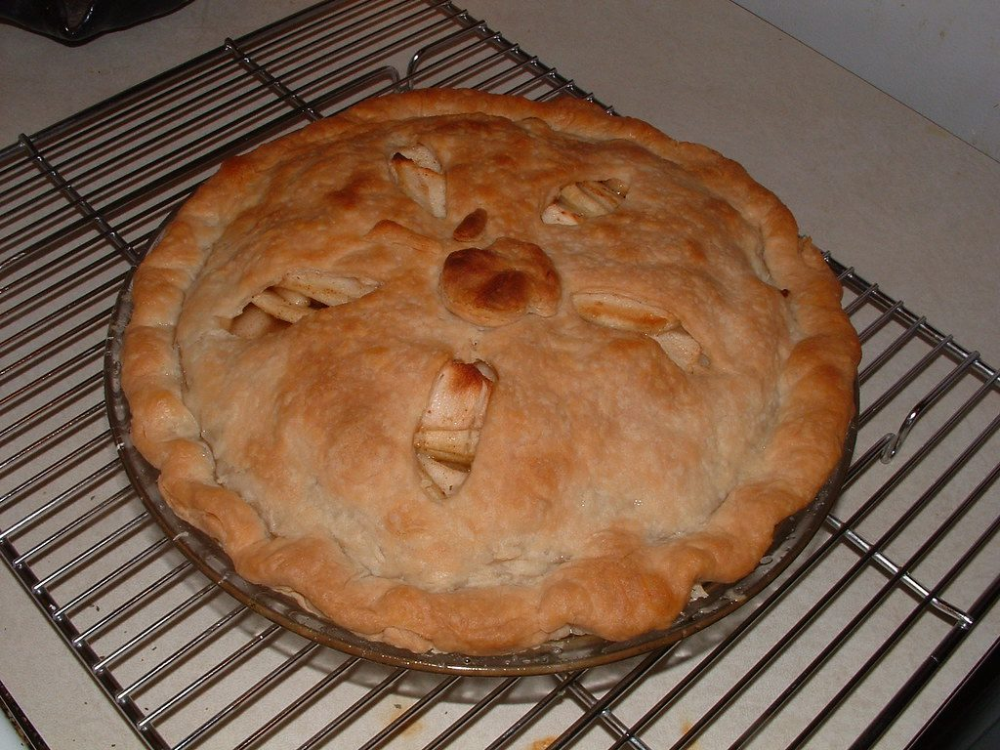
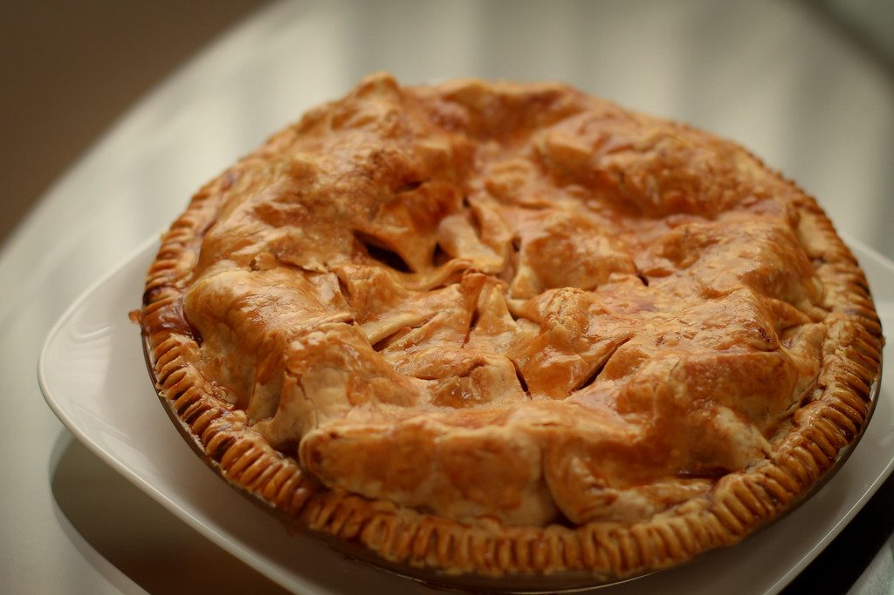
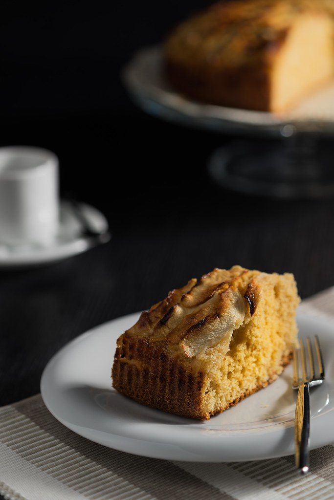
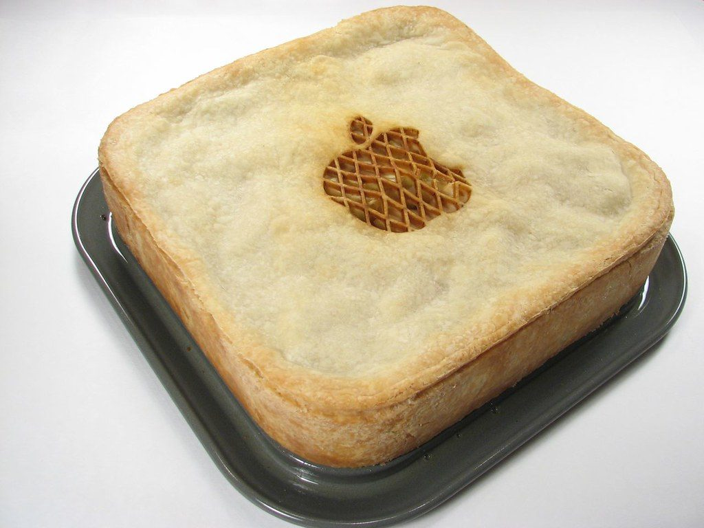
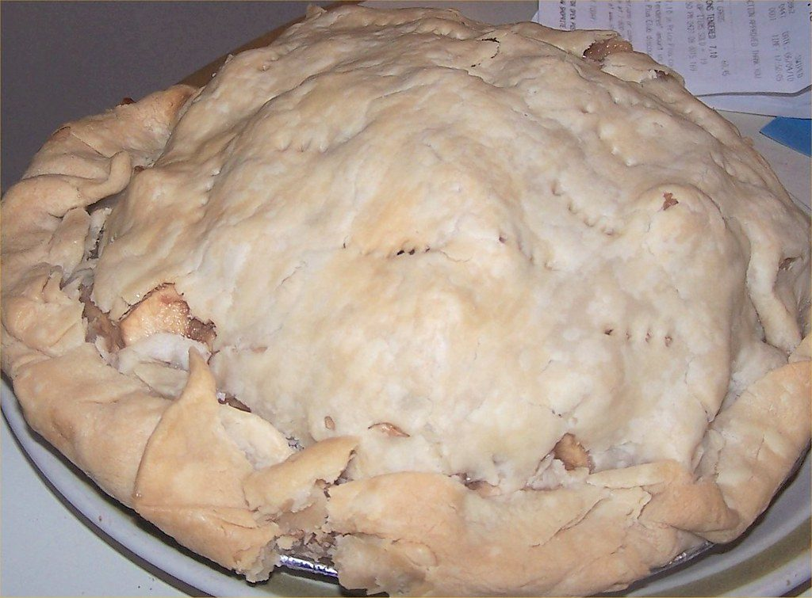
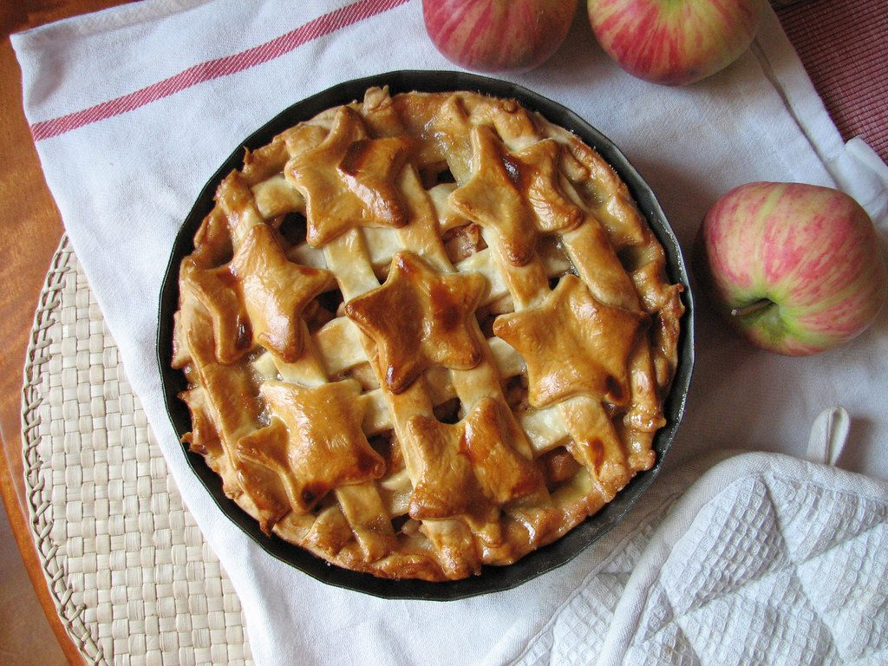
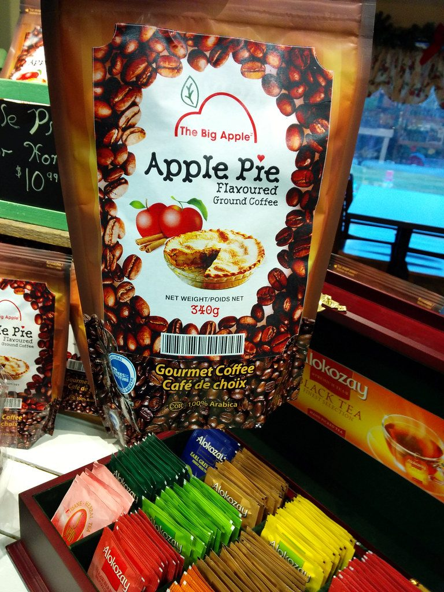

← Sweet & Baked
All-American Apple Pie
A lattice that took patience, apples that kept their spine, and a filling that never turns to soup.
A lattice that took patience, apples that kept their spine, and a filling that never turns to soup.
Apple pie's reputation as American shorthand hides a much older passport — English apple pyes date to the 14th century, often with savory intents. The American move was the double crust, the lattice, and the confidence that dessert can be the main event. Done right, it is an engineering project: a bottom crust that stays crisp under a lake of fruit, a filling thick enough to slice, a top that shatters.
The three secrets are apple selection, pre-cooking, and flour discipline. Use a mix of apples — tart Granny Smiths for structure, a sweet variety for flavor. Pre-cook the filling briefly so the apples collapse first in the pan instead of inside the pie, which creates the dreaded gap under the lid. And thicken with just enough flour or cornstarch; the juices should turn to jam, not wallpaper paste.
serves 8 — tick items off as you shop; it saves as you go
Make the dough by cutting cold butter into flour until pea-sized rubble remains, add ice water until it just holds, divide in two, flatten, wrap, chill an hour. Cold butter chunks = flaky layers. Warm butter = cardboard.
Peel, core, slice apples 1 cm thick. Toss with sugars, flour, spices, lemon, salt. Cook in a wide pan over medium 8-10 minutes until juices thicken and apples just bend. Cool completely — this is the anti-gap, anti-sog move.
Roll the first disc 3 mm thick, a circle larger than the pan. Drape into a 23 cm / 9-inch dish, press into the corner without stretching (stretched dough shrinks), leave the overhang.
Pile the cooled filling in the center — it sinks as it bakes, so mound it. Dot with butter. Brush the rim with egg so the lid welds on.
Roll the second disc, cut 2.5 cm strips, weave over the filling — over, under, repeat — or lay a full lid with 5 vents cut. Trim, fold, crimp the edge. Egg wash and coarse sugar everywhere.
220°C / 425°F for 20 minutes to set the lid, then 180°C / 350°F for 40-45 minutes until the filling bubbles through the vents — bubbling means the thickener worked. Foil-shield the rim if it darkens fast. Cool 3 hours minimum. Slicing hot pie is filling assassination.







Images are web-sourced via image search and self-hosted. Original sources:
CC-licensed images: joebeone (BY); WinstonWong* (BY-NC-SA); leguico (BY-NC-ND); 1lenore (BY); karen H. nickname.{ pooh} (BY); invisible_helicopter (BY-NC); gruntzooki (BY-SA).
https://live.staticflickr.com/3059/3063024748_7d252abc83_b.jpghttps://live.staticflickr.com/4064/4392427021_e216753cac_b.jpghttps://live.staticflickr.com/4136/4759076529_b0b2317d02_b.jpghttps://live.staticflickr.com/6184/6076181270_90d8fc4fff_b.jpghttps://live.staticflickr.com/7514/15924477918_94f0f1c624_b.jpghttps://live.staticflickr.com/76/181803048_8625f3b850_b.jpghttps://live.staticflickr.com/7647/17049892248_09e9b154c3_b.jpgVerified working videos — click a card to load the embed.


Powered by GitHub Issues — the backup kitchen. One issue per recipe; your comment lands in the repo.